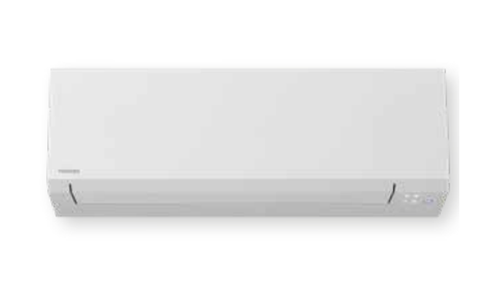

Toshiba
Shorai Edge RAS-B13G3KVSG-E + RAS-13J2AVSG-E1
Auf Lager / kurzfristig verfügbar
Premium-Lösung für mittelgroße Räume. Set aus Innen- und Außengerät zum Kühlen und Heizen.
- Sehr leiser Betrieb ab 19 dB(A)
- Hohe Effizienz
- Kühlen und Heizen
- 3,5 kW Nenn-Kühlleistung
Kühlen A+++Heizen A+++R32
1.249 €
inkl. 19 % MwSt. · zzgl. 59 € Versand · ohne Montage